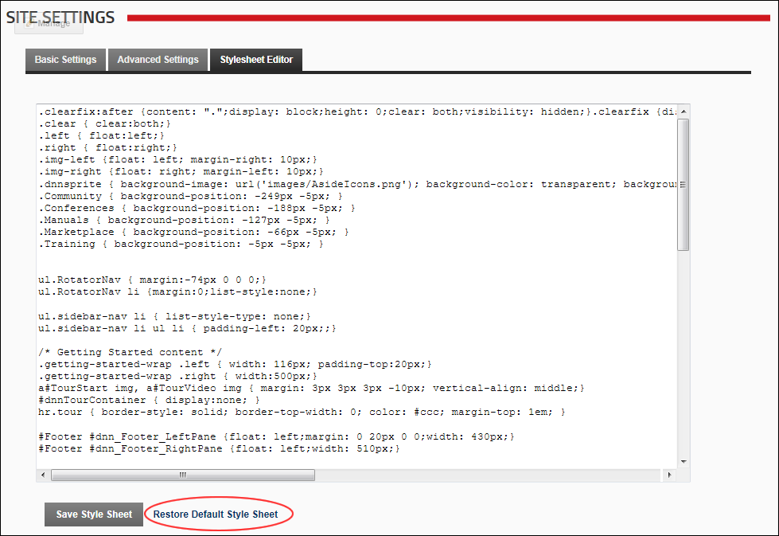

Select the Stylesheet Editor tab.
Restore the default stylesheet to the site. Any modifications to the stylesheet on this page will be deleted. The site uses a CSS (cascading style sheet) to control the fonts and colors applied across the site. Note: this will not affect any stylesheets that are part of a skin package.
Select the Stylesheet Editor tab.

Restoring the Default Stylesheet